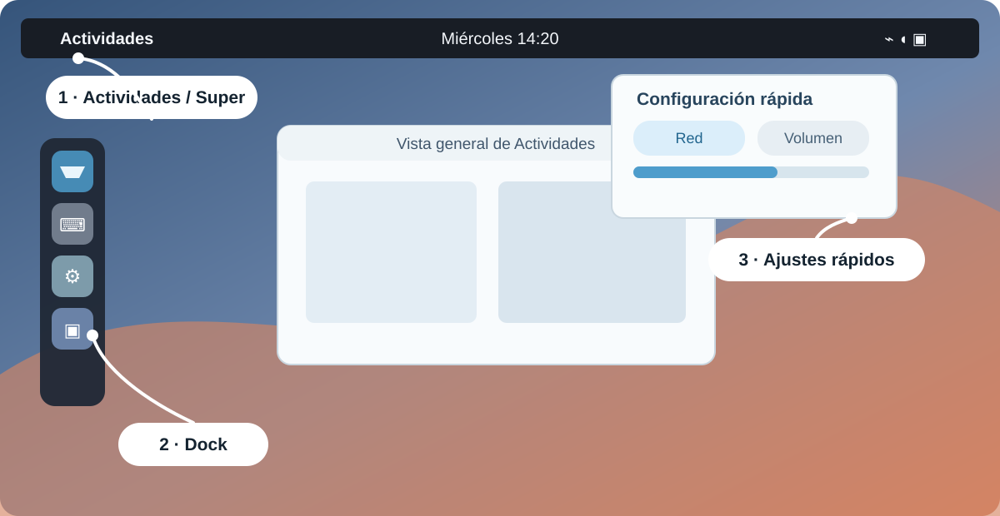
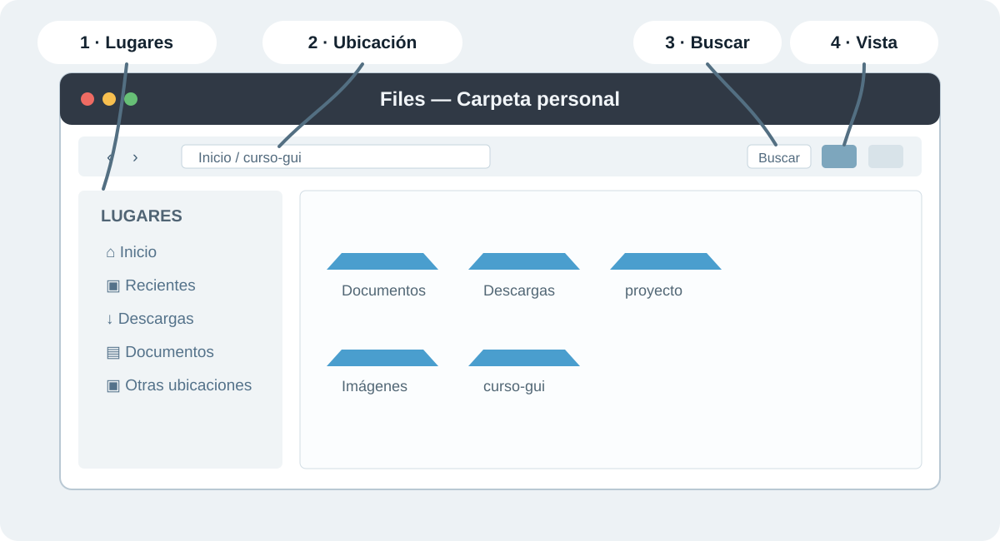
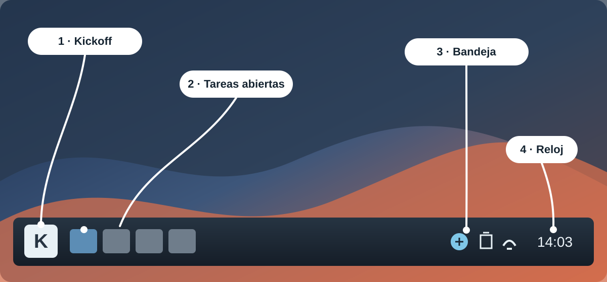
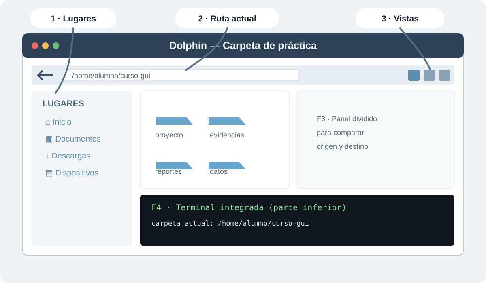
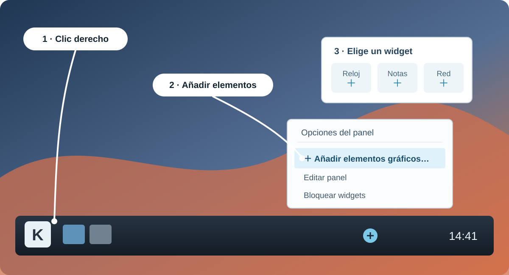

Esta sesión empieza después de navegación, archivos y permisos. Por eso puedes encontrar trabajo de la Clase 1 dentro de laboratorio/. No hace falta borrarlo ni volver a crearlo para usar esta guía.
Antes de ejecutar.
Sitúate en la raíz del curso y comprueba los dos archivos de lectura de esta clase. Son fixtures del repositorio: si faltan, no los crees vacíos; recupera el repositorio o pide apoyo al instructor.
TERMINAL · BASH
cd ~/linux-desde-cero
pwd
ls data/dummy_logs.txt data/specials.txt
El directorio laboratorio/ sí es tu área de práctica. Puedes crear una carpeta nueva sin tocar los ejercicios anteriores:
TERMINAL · BASH
mkdir -p laboratorio/shell
Si conservas laboratorio/shell/entrada/modelo.txt o laboratorio/proyecto/ de la Clase 1, úsalos como evidencia de tu avance. Esta clase no depende de ellos. No ejecutes preparar-lab.sh sólo para empezar la Clase 2: ese script reinicia laboratorio/ y elimina evidencia previa.
La numeración del temario conserva du y df primero, pero en clase conviene aprender en este orden:
leer un archivo sin modificarlo (head, tail, less);
buscar una pista o un archivo (grep, find);
decidir si falta espacio (du, df);
crear y comprobar un respaldo (tar, gzip, sha256sum);
relacionar archivos, montajes y escritorio gráfico.
Los mismos comandos sirven en distintos roles. Un técnico de soporte busca un archivo de un usuario; alguien de backend revisa configuración y logs antes de desplegar; una persona de operaciones investiga un incidente sin modificar el servidor.
Un servicio empieza a fallar porque el disco está lleno. Antes de borrar algo, necesitas responder dos preguntas distintas: “¿qué carpeta creció?” y “¿cuánto espacio queda en el sistema de archivos?”.
du significa disk usage: mide cuánto ocupan los archivos visibles dentro de una ruta. df significa disk free: muestra la capacidad y el espacio disponible del sistema de archivos donde vive una ruta. No son comandos rivales; responden preguntas diferentes.
Antes de ejecutar
Los comandos de este apartado sólo consultan información. La ruta data es un directorio del curso; . significa “el directorio en el que estoy ahora”. Confirma primero que estás en la raíz con pwd.
Sintaxis que debes reconocer
SALIDA REPRESENTATIVA
du [opciones] <ruta>
df [opciones] <ruta>
En du -sh data, -s pide un total resumido y -h usa unidades legibles, como KB, MB o GB. En df -hT ., -h vuelve legibles los tamaños y -T agrega el tipo de sistema de archivos, por ejemplo ext4.
Banderas de consulta rápida:
du -s: muestra sólo el total de una ruta.
du -h y df -h: usan unidades legibles.
du --max-depth=1: separa el tamaño por carpetas inmediatas.
df -T: muestra el tipo de sistema de archivos.
Ejemplo guiado
Ejecuta una línea y léela antes de continuar:
TERMINAL · BASH
du -sh data
du -h --max-depth=1 data
df -hT .
Salida representativa
SALIDA REPRESENTATIVA
180K data
Filesystem Type Size Used Avail Use% Mounted on
/dev/... ext4 40G 12G 26G 32% /
La primera línea responde cuánto ocupa todo data. La segunda separa el total por las carpetas inmediatamente dentro de data; úsala para encontrar qué zona merece investigación. La tercera muestra el tamaño total, usado y disponible del disco que contiene el directorio actual.
Comprueba.
Si du -sh data muestra poco espacio usado y df -hT . muestra el disco casi lleno, el problema puede estar fuera de data: logs de otro servicio, cachés, archivos de otro usuario o espacio reservado por el sistema.
Los números pueden diferir por metadatos, archivos eliminados que un proceso todavía mantiene abiertos y espacio reservado. No concluyas que un comando “falló” sólo porque sus totales no son idénticos.
Cuidado.
Ver el disco lleno no autoriza a borrar con rm -rf. Primero identifica la ruta, confirma dueño y permisos, y pide autorización cuando la información pertenezca a otro servicio o usuario.
7.17–7.18 Visualizar: cat, head, tail, less y prÍndice ↑
Situación real.
En una guardia recibes un log grande. No necesitas abrirlo con un editor ni imprimirlo todo: primero quieres una muestra inicial, las últimas líneas o una búsqueda segura sin modificar el archivo.
Todos estos comandos leen el archivo. Elige el que responde tu pregunta:
Comando
Pregunta que responde
Cuándo usarlo
cat
“¿Qué contiene completo este archivo pequeño?”
configuración corta o archivo de prueba
head
“¿Cómo empieza?”
encabezados, formato o primeras líneas
tail
“¿Qué ocurrió al final?”
eventos recientes de un log
less
“¿Cómo exploro sin editar?”
archivos medianos o grandes
Ejemplo guiado
TERMINAL · BASH
head -n 3 data/dummy_logs.txt
tail -n 2 data/dummy_logs.txt
less data/dummy_logs.txt
En head -n 3, -n 3 significa “muestra tres líneas”. tail -n 2 muestra las dos últimas. Dentro de less, escribe /ERROR y presiona Enter para buscar; presiona n para la siguiente coincidencia y q para salir. less no modifica el archivo.
Banderas y teclas de consulta rápida:
head -n <líneas>: limita la lectura inicial.
tail -n <líneas>: limita la lectura final.
/texto dentro de less: busca texto; n repite la búsqueda y q sale.
Salida representativa
SALIDA REPRESENTATIVA
2026-07-04 09:00:01 INFO User abimael logged in
2026-07-04 09:01:15 ERROR Disk full on /dev/xvda1
cat data/dummy_logs.txt también funcionará porque el archivo de práctica es pequeño. En un log de producción evita usar cat por costumbre: inundar la terminal dificulta detectar lo importante.
more y pr aparecen en temarios históricos. more es un visor más limitado; pr prepara texto para impresión. Para administrar servidores actuales, aprende primero less.
Comprueba.
Explica con tus palabras por qué usarías tail para un incidente reciente y less para investigar varias coincidencias sin editar nada.
Opcional — tipo MIME y aplicación predeterminadaÍndice ↑
Un tipo MIME describe qué clase de contenido tiene un archivo, por ejemplo text/plain o application/pdf. No es algo propio de KDE: los escritorios Linux usan esta convención para decidir qué aplicación propone abrir un archivo. Esta consulta es útil en soporte cuando un archivo se abre con una aplicación inesperada.
Ejecuta estas consultas sólo si estás en una sesión gráfica. No cambian ninguna asociación:
Las dos primeras líneas deben identificar text/plain. La última puede ser org.kde.kate.desktop, otra aplicación o no mostrar nada si no hay una asociación gráfica en esa sesión. Es una consulta; no intentes corregir una asociación durante esta clase.
Un ticket dice “hay errores de autenticación” o “no encuentro el archivo de configuración”. Antes de cambiar algo debes separar dos preguntas: grep busca texto dentro de archivos; find busca archivos y directorios por sus características.
grep: encontrar una pista dentro de un archivo
Sintaxis general
SALIDA REPRESENTATIVA
grep [opciones] '<texto a buscar>' <archivo>
Las comillas simples conservan el texto tal como lo escribiste. En esta clase buscamos texto literal; las expresiones regulares avanzadas se trabajan en la Clase 4.
-n agrega el número de línea, útil para reportar una evidencia. -i ignora mayúsculas y minúsculas. -F dice “trata el patrón literalmente”: los corchetes de [INFO] no se interpretan como una regla especial.
Banderas de consulta rápida:
grep -n: agrega número de línea.
grep -i: ignora mayúsculas y minúsculas.
grep -F: busca el texto literalmente.
Salida representativa
SALIDA REPRESENTATIVA
2:2026-07-04 09:01:15 ERROR Disk full on /dev/xvda1
5:2026-07-04 09:04:50 ERROR Network unreachable
find: localizar archivos por nombre o tipo
Sintaxis general
SALIDA REPRESENTATIVA
find <dónde_buscar> [condiciones]
TERMINAL · BASH
find data -maxdepth 2 -type f -name '*.csv'
Aquí data es el lugar donde comienzas a buscar; -maxdepth 2 limita la exploración a dos niveles; -type f evita devolver directorios; -name '*.csv' pide nombres que terminen en .csv. Las comillas evitan que el shell intente expandir *.csv antes de que find lo use.
Si buscas la palabra ERROR dentro de un log usa grep. Si buscas todos los CSV que existen bajo data, usa find. Di qué parte es la entrada y cuál es el resultado esperado antes de ejecutarlos.
Cuidado.
En una búsqueda inicial evita acciones que modifiquen resultados, como opciones de borrado. Primero lista y revisa; actuar sobre resultados masivos es un paso posterior que requiere confirmación.
Antes de escalar un incidente o entregar evidencia a otro equipo, necesitas mandar varios archivos sin alterar los originales. Un respaldo útil se puede crear, listar, restaurar en otro lugar y comprobar.
tar reúne varios archivos en un solo paquete. gzip comprime ese paquete para ocupar menos. El nombre .tar.gz comunica ambas cosas: primero se agrupó con tar, después se comprimió con gzip.
Sintaxis que debes reconocer
SALIDA REPRESENTATIVA
tar -czf <paquete.tar.gz> <archivos de entrada>
tar -tzf <paquete.tar.gz>
tar -xzf <paquete.tar.gz> -C <directorio de restauración>
-c: crear un paquete.
-t: listar lo que contiene, sin extraerlo.
-x: extraer o restaurar.
-z: usar compresión gzip.
-f: el siguiente argumento es el nombre del paquete.
-C: restaurar dentro de otro directorio.
Salida representativa al listar el paquete:
SALIDA REPRESENTATIVA
data/dummy_logs.txt
data/specials.txt
Ejemplo guiado
Primero crea una carpeta segura para la restauración. Si ya existe porque repetiste el ejercicio, mkdir -p no borra nada.
TERMINAL · BASH
mkdir -p laboratorio/shell/restaurado
Ahora crea el paquete. Las entradas son los dos archivos originales; el primer nombre es el nuevo archivo que se creará.
TERMINAL · BASH
tar -czf laboratorio/shell/respaldo-clase2.tar.gz data/dummy_logs.txt data/specials.txt
Lista el paquete antes de extraerlo. Debes ver data/dummy_logs.txt y data/specials.txt.
TERMINAL · BASH
tar -tzf laboratorio/shell/respaldo-clase2.tar.gz
Restaura en una ruta diferente para no sobrescribir los originales:
TERMINAL · BASH
tar -xzf laboratorio/shell/respaldo-clase2.tar.gz -C laboratorio/shell/restaurado
Verificar con sha256sum
Un hash es una huella calculada a partir del contenido de un archivo. Si dos archivos tienen el mismo contenido, sus hashes SHA-256 coinciden. No necesitas memorizar criptografía para usarlo como comprobación.
Cada línea empieza con un hash largo. En cada pareja, los dos hashes deben ser iguales. Eso indica que la copia restaurada conserva el mismo contenido que el original.
Nunca extraigas a ciegas un paquete recibido. Primero usa tar -tzf para saber qué contiene y elige un directorio de restauración que no pise archivos de trabajo.
En soporte local puede ser necesario enviar un documento a una impresora compartida. En servidores, contenedores y EC2 normalmente no hay impresora configurada; no es un error que estos comandos no tengan salida útil allí.
En un equipo con CUPS e impresora configurada:
TERMINAL · BASH
lpstat -p
lpr documento.pdf
lpq
lpstat -p muestra las impresoras conocidas. lpr documento.pdf envía el archivo indicado a la cola predeterminada. lpq consulta trabajos pendientes. Antes de enviar algo, confirma qué impresora es la predeterminada y que el documento no contiene información sensible.
Comprueba.
Si lpstat -p no muestra impresoras en una EC2, la decisión correcta es no instalar una GUI ni servicios de impresión sólo para “hacer que el ejemplo funcione”. Esta sección es referencia de soporte de escritorio.
Práctica guiada resuelta — Respaldo de evidencia de un incidenteÍndice ↑
Una aplicación produjo mensajes de nivel ERROR y necesitas entregar al siguiente turno una copia de los logs de práctica. Esta práctica no modifica los originales y no utiliza redirecciones ni pipes: esos mecanismos se estudian en la Clase 3.
Comprueba que existen los dos archivos de entrada con el bloque de “Antes de continuar”.
Crea laboratorio/shell/restaurado si no existe.
Crea el paquete, lista su contenido, restaura en otra ruta y compara los hashes.
TERMINAL · BASH
mkdir -p laboratorio/shell/restaurado
tar -czf laboratorio/shell/respaldo-clase2.tar.gz data/dummy_logs.txt data/specials.txt
tar -tzf laboratorio/shell/respaldo-clase2.tar.gz
tar -xzf laboratorio/shell/respaldo-clase2.tar.gz -C laboratorio/shell/restaurado
sha256sum data/dummy_logs.txt laboratorio/shell/restaurado/data/dummy_logs.txt
sha256sum data/specials.txt laboratorio/shell/restaurado/data/specials.txt
La evidencia mínima es: el nombre del paquete, su listado y dos parejas de hashes iguales. Si un hash no coincide, no entregues el respaldo como válido; vuelve a revisar la ruta de restauración y el archivo comparado.
Imagina que debes entregar evidencia a un compañero de soporte. Dentro de laboratorio/reto7, localiza con find dos archivos de texto o CSV no vacíos bajo data/. Elige dos, crea un único paquete, lista su contenido, restáuralo dentro de laboratorio/reto7/restaurado y compara los hashes de los originales y las copias.
Si laboratorio/reto7 no existe, créalo con mkdir -p laboratorio/reto7/restaurado. Si data/ o los archivos que elegiste no existen, no crees sustitutos vacíos: vuelve al bloque “Antes de continuar”.
En soporte o DevOps alguien puede decir “el disco /dev/nvme0n1p1 está lleno”, mientras que una aplicación sólo conoce rutas como /var/log o /home. Un montaje es la relación entre ambos mundos: conecta un dispositivo o sistema de archivos con una ruta dentro del único árbol de Linux.
Este apartado pertenece a la Clase 2. Trabaja desde la raíz del curso, aunque conserves carpetas de la Clase 1 en laboratorio/:
TERMINAL · BASH
cd ~/linux-desde-cero
pwd
No necesitas crear discos ni particiones para este ejercicio. Los comandos consultan el estado actual del equipo. Si laboratorio/ no existe, podrás crearlo más adelante con mkdir -p laboratorio; no recrees a mano archivos versionados de data/.
Piensa en un montaje como una puerta: el origen es el dispositivo o sistema de archivos, el destino es la carpeta por la que lo usas y el tipo indica cómo organiza sus datos. No trabajes con letras de unidad como en otros sistemas; pregunta siempre “¿en qué ruta está montado?”.
En este curso se inspeccionan montajes; no se formatean discos ni se modifican particiones.
lsblk -f # dispositivos, tipo y punto de montaje
findmnt <ruta> # qué origen está montado en una ruta
df -hT <ruta> # capacidad del sistema de archivos de esa ruta
lsblk -f muestra discos y particiones. Busca las columnas FSTYPE y MOUNTPOINTS; no cambies nada desde esa pantalla.
findmnt / responde qué está montado exactamente en la raíz /.
df -hT / responde cuánto espacio queda para las rutas que viven bajo esa raíz.
Comprueba.
Si una aplicación guarda logs en /var/log, prueba findmnt /var/log y df -hT /var/log. Puede pertenecer al mismo montaje que / o a uno independiente; la salida, no una suposición, te da la respuesta.
lsblk -f: dispositivos, sistema de archivos, etiquetas y puntos de montaje.
findmnt: relación entre destino y origen.
df -hT: espacio disponible y tipo; -h usa unidades legibles y -T agrega el tipo.
ext4 es común en Ubuntu; XFS y Btrfs ofrecen decisiones diferentes, pero el usuario sigue trabajando mediante rutas.
Cuidado.
Comandos como mkfs, fdisk, parted o mount pueden cambiar almacenamiento. No son parte de esta práctica. Primero identifica origen, destino y consecuencia antes de ejecutar una operación sobre discos.
03
Capas gráficas
X Window y Wayland
Relación entre aplicaciones, toolkits, protocolos gráficos, compositor, kernel y pantalla.
Este capítulo se trabaja en una VM con escritorio abierto, no en la terminal SSH de EC2. La EC2 sigue siendo útil para los comandos de servidor; la VM gráfica sirve para observar cómo una aplicación llega a una pantalla.
TERMINAL · BASH
cd ~/linux-desde-cero
pwd
No necesitas archivos de la Clase 1 para esta demostración. Si laboratorio/ existe, conserva su contenido. El reto de este capítulo crea laboratorio/sesion-grafica.txt desde un editor gráfico; si la carpeta no existe, puedes crearla con mkdir -p laboratorio.
Cuidado.
No instales GNOME, KDE ni un servidor gráfico en una EC2 sólo para seguir la práctica. Si no tienes VM gráfica, observa la demostración del instructor y usa el diagrama.
Una persona de soporte usa una aplicación con ventanas en su laptop, mientras que una persona de operaciones administra por SSH un servidor sin pantalla. Ambos usan Linux, pero no necesitan la misma capa gráfica.
Linux es el kernel y el sistema base. Un escritorio como GNOME o KDE Plasma organiza ventanas, menús y configuración. X.Org y Wayland son formas de comunicar aplicaciones gráficas con la pantalla, teclado y ratón. No son sinónimos.
SALIDA REPRESENTATIVA
aplicación → toolkit → X.Org o compositor Wayland → kernel/controladores → pantalla
↑
teclado y ratón
Abre GNOME Terminal o Konsole dentro de la VM gráfica. Las variables que empiezan con $ son valores que la sesión ya conoce; no sustituyas tú el signo $.
La primera línea suele mostrar wayland o x11. La segunda puede mostrar GNOME, KDE, ubuntu:GNOME u otro nombre. Los valores cambian según la distribución y la sesión elegida al iniciar.
Qué significa una salida vacía
Si una variable no muestra nada, probablemente ejecutaste el comando desde SSH, una consola virtual o una sesión sin escritorio. Eso no indica que Linux esté roto: indica que no hay una sesión gráfica que describir.
Un servidor de aplicación normalmente se administra por SSH porque no necesita ventanas para atender peticiones. Evitar una GUI reduce paquetes instalados, memoria usada, actualizaciones y superficie de ataque. Una estación de soporte o desarrollo sí puede usar GUI para editar, revisar archivos o ejecutar herramientas visuales.
Si necesitas…
Usa principalmente…
operar una EC2, revisar logs, cambiar configuración
SSH y terminal
asistir a una persona local, mover documentos, ajustar pantalla
escritorio gráfico
automatizar despliegues o tareas repetibles
comandos y scripts reproducibles
Práctica guiada resuelta — Mapa de tu sesiónÍndice ↑
En la VM gráfica, abre una terminal.
Ejecuta las dos líneas de identificación.
Abre el menú de aplicaciones y localiza una aplicación visible, por ejemplo Files o Konsole.
Abre un editor de texto gráfico, escribe protocolo, escritorio y dos aplicaciones visibles, y guarda el archivo como ~/linux-desde-cero/laboratorio/sesion-grafica.txt.
El archivo es una evidencia humana, no una salida que debas generar con redirecciones. Si laboratorio/ no existe, crea la carpeta desde Files o ejecuta:
TERMINAL · BASH
mkdir -p laboratorio
Comprueba.
En tu evidencia debe quedar clara esta frase: “Mi aplicación se muestra mediante una sesión gráfica; mi servidor EC2 no necesita esa sesión para ejecutar servicios”.
Desde la VM del instructor, crea o completa ~/linux-desde-cero/laboratorio/sesion-grafica.txt con protocolo, escritorio, dos aplicaciones visibles y una frase sobre cada capa. Si el archivo de evidencia no existe, créalo desde el editor gráfico; si laboratorio/ no existe, créalo primero.
[ ] Sé reconocer si estoy en una sesión gráfica o en SSH.
[ ] Puedo justificar por qué un servidor puede operar sin escritorio.
04
Escritorio
GNOME
Actividades, Files, herramientas esenciales y espacios de trabajo para comprender el flujo de GNOME.
Capítulo 5ActivitiesFiles · NautilusWorkspaces
GNOME es un entorno de escritorio: organiza ventanas, aplicaciones, notificaciones y espacios de trabajo sobre Linux. En Ubuntu Desktop, GNOME es la interfaz que verás; no reemplaza al kernel, al sistema de archivos ni a Bash.
Entorno de demostración. La VM del instructor usa Ubuntu 24.04 LTS con GNOME. Los iconos o nombres menores pueden variar según la versión, pero la ruta de trabajo es la misma.
Instalar Ubuntu GNOME en una VM (opcional)Índice ↑
Para reproducir el recorrido en casa, usa Ubuntu 24.04.4 Desktop para 64 bits (amd64). Es una imagen reciente de Ubuntu con GNOME; una revisión menor diferente de 24.04 puede cambiar iconos o textos, no la idea de la demostración.
Descarga la ISO oficial de Ubuntu indicada arriba (aproximadamente 6.2 GB).
En VirtualBox elige Nueva y crea Ubuntu-GNOME: tipo Linux, versión Ubuntu (64-bit), al menos 4 GB de RAM, 2 CPU y un disco virtual VDI dinámico de 30 GB.
En Configuración → Almacenamiento, selecciona la unidad óptica vacía, carga la ISO e inicia la VM. Elige Install Ubuntu.
Instala únicamente en el disco virtual creado por VirtualBox (por ejemplo, VBOX HARDDISK), reinicia y retira la ISO cuando la VM lo solicite.
Cuidado.
Esta práctica es opcional. No selecciones un disco físico ni reemplaces el sistema operativo de tu equipo para completar la Clase 2.
El instructor muestra GNOME desde Ubuntu Desktop o una VM preparada. Observa primero: no necesitas instalar otro escritorio, cambiar la red ni modificar configuraciones globales.
GNOME concentra el trabajo en Actividades. Desde ahí se buscan aplicaciones, se ven las ventanas abiertas y se cambia de espacio de trabajo. Es distinto del menú por categorías de KDE Plasma, pero ambos permiten llegar a las mismas aplicaciones Linux.

Mapa visual: usa Actividades o Super para abrir la vista general. La configuración rápida sólo se observa durante la demostración.
Elemento
Dónde se reconoce
Para qué sirve
Actividades
Esquina superior izquierda o tecla Super
Abrir la vista general, buscar aplicaciones y ver espacios de trabajo.
Dock
Barra lateral o inferior, según la distribución
Acceso rápido a aplicaciones frecuentes y ventanas abiertas.
Configuración rápida
Menú de iconos de red, volumen y energía
Consultar estado y controles inmediatos de la sesión.
Cuidado.
No cambies red, brillo, energía o sesión en una máquina compartida sólo para explorar el menú.
Files (también llamado Nautilus) es el gestor de archivos de GNOME. Esta demostración no repite crear, copiar, mover o cambiar permisos: esas operaciones ya se aprendieron en Clase 1. Aquí importa reconocer cómo GNOME presenta las rutas y cómo se encuentra información visualmente.

Mapa visual de Files: identifica primero Lugares, la ubicación, Buscar y los botones de vista.
Lugares: permite ir a Inicio, Recientes, Descargas, Documentos y otras ubicaciones.
Ubicación: muestra dónde estás; con Ctrl+L puedes escribir o copiar una ruta cuando necesites documentarla.
Buscar: usa el botón de búsqueda o Ctrl+F para encontrar elementos dentro de la ubicación abierta.
Vista: alterna entre iconos y lista para priorizar vista previa o detalles.
Cuidado.
Files no tiene una vista dividida equivalente a Dolphin. Si necesitas comparar origen y destino durante una demostración, usa dos ventanas o elige Dolphin; no presentes una limitación como si fuera un error del alumno.
Orientar una consulta local antes de investigar con más detalle.
🔎 Búsqueda de Actividades
Escribir el nombre de una aplicación
Abrir una herramienta sin recorrer menús.
🧮 Calculator (opcional)
Cambiar a modo Programador
Convertir un valor entre decimal, hexadecimal y binario durante una demostración técnica.
Estas herramientas sirven para observar y documentar. Los comandos de búsqueda, procesos, archivos y permisos se conservan en sus capítulos de terminal.
Estas aplicaciones no son parte de GNOME, pero se usan con frecuencia sobre Ubuntu Desktop. Se muestran sólo si ya están instaladas en la VM del instructor; no se instalan durante la clase.
Aplicación
Qué mostrar en un minuto
Uso habitual
📹 OBS Studio
Escena, fuentes y botón de grabación
Grabar una demostración de pantalla o una incidencia reproducible.
🎙️ Audacity
Pista de audio y medidor de entrada
Grabar o limpiar audio para material de capacitación.
🎨 GIMP
Capas y herramienta de anotación
Preparar una captura con marcas antes de documentar un ticket.
📊 GNU Octave
Consola y una gráfica de ejemplo preparada
Cálculo numérico y prototipos académicos o de ingeniería.
🖥️ Remmina
Tipo de conexión RDP/VNC/SSH
Acceder a una estación remota autorizada desde soporte.
Cuidado.
No inicies grabaciones, conexiones remotas ni cambios de audio en equipos ajenos. El objetivo es reconocer la herramienta y cuándo sería apropiada.
En Actividades, GNOME muestra espacios de trabajo para separar tareas: por ejemplo, documentación en uno y una terminal o navegador en otro. Arrastra una ventana a otro espacio o usa la vista general para cambiar entre ellos.
Es opcional porque depende del flujo de cada persona. La idea importante es que mover una ventana de espacio no la cierra ni cambia sus archivos.
Componente que muestra el panel superior, Actividades, notificaciones y la vista general.
Actividades
Puerta de entrada para buscar aplicaciones, ver ventanas y cambiar de espacio de trabajo.
Dock
Barra de accesos a aplicaciones frecuentes y ventanas abiertas.
Configuración rápida
Menú de controles inmediatos de red, sonido, energía y sesión.
Files / Nautilus
Gestor de archivos de GNOME.
Espacio de trabajo
Área separada para organizar ventanas sin cerrar aplicaciones.
05
Escritorio
KDE Plasma
Panel, Kickoff, Dolphin y herramientas esenciales para comprender una interfaz Plasma moderna.
Capítulo 6DolphinHerramientas KDE
KDE Plasma es un entorno de escritorio: la capa visual que aporta panel, menú de aplicaciones, ventanas, widgets y herramientas gráficas para trabajar sobre Linux. No es otra distribución ni otro kernel; Kubuntu combina Ubuntu como sistema base con KDE Plasma como interfaz.
Recorrido práctico hands-on para conocer esta interfaz. Compararemos Plasma con GNOME y relacionaremos las acciones visuales con los conceptos Linux ya aprendidos, sin repetir comandos de terminal.
Imagen usada en la demostración. La VM del instructor usa kubuntu-16.04.6-desktop-amd64.iso (Kubuntu 16.04.6 Desktop para 64 bits), con KDE Plasma. Los nombres exactos de algunos menús pueden variar con la versión; busca la función descrita, no una etiqueta idéntica.
En VirtualBox elige Nueva y crea Kubuntu-KDE: tipo Linux, versión Ubuntu (64-bit), al menos 2 GB de RAM, 2 CPU y un disco virtual VDI dinámico de 25 GB.
En Configuración → Almacenamiento, selecciona la unidad óptica vacía y carga la ISO descargada. Inicia la VM y elige Install Kubuntu.
En la pantalla de destino, selecciona instalar sobre el disco virtual creado por VirtualBox (por ejemplo, VBOX HARDDISK). Finaliza el asistente, reinicia y retira la ISO cuando la VM lo pida.
Cuidado.
Kubuntu 16.04 es una versión histórica sin soporte de seguridad. Úsala sólo en una VM de práctica aislada. No selecciones un disco físico ni reemplaces el sistema operativo de tu equipo para completar la Clase 2.
Una persona de soporte debe orientarse rápidamente en una estación que usa Plasma. Antes de abrir herramientas, identifica qué parte lanza aplicaciones, qué parte muestra tareas y dónde aparecen red, volumen o notificaciones.
Qué mostrar
Ruta o acción en Plasma
Qué debe observar el alumno
Panel
Barra normalmente inferior
Contiene lanzador, tareas abiertas, widgets y bandeja; es configurable.
Kickoff
Botón con la K al extremo izquierdo del panel inferior
Abre categorías y búsqueda; el icono puede variar con el tema.
Escritorio
Área central
Puede contener archivos y widgets; no es una carpeta distinta del sistema.
Bandeja del sistema
Extremo del panel
Red, sonido, batería, actualizaciones y notificaciones.
Editar panel
Clic derecho en panel → modo de edición
La posición y los elementos del panel pueden cambiarse.
Widgets
Modo de edición → Añadir widgets
Son componentes independientes, como reloj, notas o monitor de recursos.
Comprueba.
Pide al grupo que ubique Kickoff, una aplicación abierta y el indicador de red antes de seguir. Así todos parten del mismo mapa visual.

Mapa visual: en la VM mostrada, el botón K abre Kickoff. Los iconos y colores pueden cambiar con el tema.
Dolphin es el gestor de archivos actual de KDE Plasma. KFM es un nombre histórico que puede aparecer en material antiguo, pero no es la herramienta que se demostrará.

Mapa visual de Dolphin: F3 muestra dos paneles; F4, la terminal inferior.
Atajos visibles en Dolphin:
F3: muestra u oculta la pantalla dividida, con dos paneles de archivos lado a lado.
F4: muestra u oculta la terminal en la parte inferior de Dolphin, sincronizada con la carpeta que estás viendo.
Qué mostrar
Acción en Dolphin
Para qué sirve
Lugares
Panel izquierdo
Llegar a Inicio, Documentos, Descargas, dispositivos y rutas frecuentes.
Vistas
Botones de iconos, detalles y columnas
Elegir la vista adecuada: columnas ayuda a recorrer jerarquías.
Panel dividido
Tecla F3
Muestra dos paneles lado a lado para comparar origen y destino sin abrir dos ventanas.
Terminal integrada
Tecla F4
Muestra una terminal debajo de los paneles, sincronizada con la carpeta visible; no repetir comandos.
Archivos ocultos
Control → Mostrar archivos ocultos o Alt+.
Ver archivos cuyo nombre inicia con punto, como .config; suelen contener configuración y no se modifican por accidente.
Ruta editable
Barra de ubicación
Copiar, entender o navegar una ruta concreta.
Situación real.
Cuando recibes archivos para soporte o despliegue, la vista dividida reduce errores: deja visible el origen en un panel y el destino en el otro antes de copiar o mover.
KMenuEdit permite revisar cómo está construido el menú de aplicaciones de Plasma. Es una exploración opcional en la VM del instructor; no es una tarea para configurar los equipos de alumnos.
Abre Kickoff y busca KMenuEdit; en algunas versiones también aparece como “Editar aplicaciones”.
Selecciona una entrada y ubica sus cuatro piezas: nombre, icono, categoría y acción que se ejecuta al abrirla.
Muestra que una entrada puede moverse de categoría o recibir otro icono; el objetivo es reconocer que el menú es configurable.
Cierra sin guardar cambios. No necesitas crear un lanzador para completar la clase.
Cuidado.
No crees accesos que ejecuten utilidades administrativas ni modifiques el menú de una máquina compartida.
Como exploración guiada, muestra dónde se administran:
escritorios virtuales y actividades;
comportamiento de inicio y restauración de sesión;
red y VPN;
efectos del espacio de trabajo.
Explica el criterio operativo: una personalización útil para una estación personal puede ser una decisión incorrecta en una estación compartida o administrada por políticas corporativas.
Para añadir un elemento: clic derecho en una zona vacía del panel → Añadir elementos gráficos… → elegir el widget. Después puedes arrastrarlo a la posición deseada y bloquear los widgets al terminar.

Mapa visual: añade un widget sólo en la VM de práctica; al terminar, bloquea los widgets para evitar cambios accidentales.
Acción
Aprendizaje
Añadir Dolphin a barra de tareas
Un lanzador fija acceso rápido a una herramienta frecuente.
Reordenar reloj, lanzador o bandeja
El panel es flexible y depende del flujo de trabajo.
Bloquear widgets
Evita cambios accidentales después de configurar una estación.
Esta personalización es opcional; no se evalúa ni debe consumir el tiempo destinado a búsqueda y respaldos.
Entorno de escritorio: organiza paneles, ventanas, menús, widgets y configuraciones gráficas.
Panel
Barra de la pantalla que reúne el lanzador de aplicaciones, tareas abiertas, bandeja del sistema y reloj.
Kickoff
Menú de aplicaciones de Plasma: en esta VM es el botón con la K al extremo izquierdo del panel inferior. Abre categorías y búsqueda; el icono puede variar con el tema.
Widget
Pequeño componente visual que muestra o controla información, por ejemplo reloj, clima, notas o uso del sistema.
Bandeja del sistema
Zona del panel donde aparecen indicadores como red, volumen, batería, actualizaciones y notificaciones.
Dolphin
Gestor de archivos de KDE. Sirve para explorar carpetas, cambiar vistas, usar panel dividido y consultar propiedades de los archivos.
Konsole
Emulador de terminal de KDE. En esta clase se reconoce como una aplicación de Plasma; los comandos ya se estudian en las secciones de shell.
KRunner
Lanzador y buscador de Plasma. Se abre con Alt+F2 para iniciar aplicaciones o localizar elementos rápidamente.
KFind
Herramienta gráfica para buscar archivos y carpetas mediante nombre, ubicación, fecha o contenido.
Spectacle
Aplicación para realizar capturas de pantalla y seleccionar qué parte de la interfaz documentar.
Ark
Gestor gráfico de archivos comprimidos; permite abrir, revisar y extraer archivos como .zip o .tar.gz.
Okular
Visor de documentos, especialmente útil para PDF y otros formatos de lectura.
Kate
Editor de texto de KDE para revisar y editar archivos de texto y código.
KHelpCenter
Centro de ayuda de KDE, con documentación de las aplicaciones y componentes del escritorio.
KMenuEdit
Herramienta para revisar y organizar los lanzadores que aparecen en el menú de aplicaciones.
Escritorios virtuales
Espacios de trabajo separados para distribuir ventanas según la tarea, sin cerrar aplicaciones.